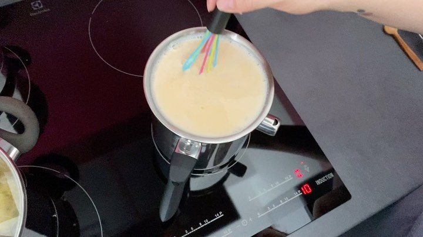

Veľkonočná hrudka podľa @sapredsanezblaznimvkuchyni — Normy Jedál
Bez čoho si neviete predstaviť Veľkú noc? My jednoznačne bez hrudky 😁
Celé video na youtube (priamy link v profile).
#sapredsanezblaznimvkuchyni #ankapavluv #varimesankou #velkanoc #hrudka #velkonocnahrudka #videorecepty